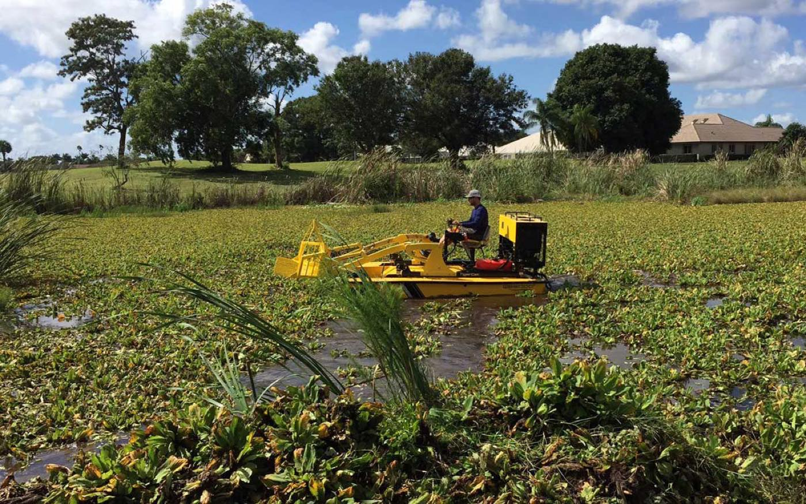

Cattails
The root rake uses 2-foot steel fingers to clear cattails, emergent shoreline growth, underwater rocks, and debris where site conditions allow.

Home / Services / Shoreline weed removal
Clear cattails, lily pads, submerged weeds, and overhanging branches from hard-to-reach shorelines. Our specialized workboat approaches the shoreline from the water, reducing the need to operate heavy equipment on soft or unstable banks.
Why it matters
Heavy vegetation can block waterfront views, restrict access, crowd docks, and make shoreline maintenance difficult. Soft banks and shallow water can also prevent conventional land-based or full-size harvesting equipment from reaching the problem.
Our workboat uses five quick-change attachments to cut, lift, collect, and remove unwanted vegetation while operating from the water.
What we clear
The root rake uses 2-foot steel fingers to clear cattails, emergent shoreline growth, underwater rocks, and debris where site conditions allow.

Remove excessive lily pad growth affecting shoreline access, docks, and open-water areas.

Cut and collect submerged or emergent vegetation growing close to the shoreline.
Use the skimmer attachment to collect algae, duckweed, and other fine material gathering along the waterline.
Cut tree branches, small trees, and downed logs in the water using a hydraulic pole saw.
Not sure what is growing? Tell us about the shoreline and include photos if available for an initial review. Discuss Your Shoreline Project
The equipment
Shoreline projects often involve more than one type of vegetation. Interchangeable attachments allow the work boat to adapt without bringing several separate machines to the property.

Cuts submerged and emergent aquatic vegetation up to 5 feet below the surface.
Scoops and removes vegetation from depths up to 3 feet.
Collects algae and other fine material floating on or just below the surface.
Clears shoreline growth, underwater rocks, and debris with 2-foot steel fingers.
Cuts tree branches, small trees, and downed logs in the water.
The process

Share details about the vegetation, affected area, water depth, nearby docks, and property access. Include photos if available.

We identify the likely vegetation and determine which equipment is suitable for the shoreline.

The work can focus on docks, views, access points, fishing areas, or other sections that need attention.

We mechanically cut, lift, or collect the unwanted vegetation and remove the collected material from the water.
Working from the water
Land-based equipment may damage soft banks or struggle to reach vegetation growing beyond the waterline. Working from a compact boat provides direct access to shallow growth, submerged plants, and shoreline obstacles.
Who we help
Questions
The root-rake attachment can remove heavy cattail growth where water depth, access, and shoreline conditions allow.
The compact workboat is designed to navigate shallow and restricted waterfront areas, including areas around docks and other obstacles.
Some regrowth is normal. The rate of return depends on the species, water conditions, and seasonal growth cycle.
Free initial review
Tell us about the shoreline areas you want cleared. We will review the vegetation, access conditions, and project scope before recommending the most suitable removal approach.